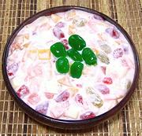

|
Fruit Salad (Dessert)Philippine - Buko Salad | ||||
| Makes: Effort: Sched: DoAhead: |
3-1/2 # ** 3+ hrs Best |
Considered almost essential for parties, this salad is very easy to make - thought some of the ingredients I've listed may not be easy to find in Red States. See Details for variations. | |||
|
30 1/2 1/2 1/2 12 6 2 2 2 3/4 7 |
oz 14 oz 14 oz 14 oz oz oz oz oz oz c oz |
Fruit Cocktail (1) jar Macapuno (2) jar Nata de Coco (3) jar Kaong (4) Apples (5) Pineapple (6) Raisins, golden Edam Cheese (70 Cream Cheese (8) Heavy Cream Condensed Milk (9) |
Make - (20 min work - plus draining and cooling time)
|